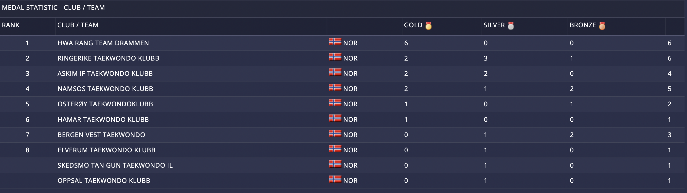

Innlegg
Gratulerer med mange bra plasseringer i Online Poomsae 4

Dette er andre gang Ringerike Taekwondo har deltatt i Online Poomse-konkurranse, og denne gangen var det enda flere deltakere med, og det gikk strålende!Til sammen fikk vi 2. plass for sammenlagte medaljer.
Online Poomse-konkurranse fungerer slik at hver utøver sender inn videoer som er filmet i vår egen dojang av at h*n går to poomser, og etter en liten stund kommer resultatene. Derfor er dette en veldig lettvint og lavterskel måte å delta på konkurranse på, siden du ikke trenger å dra langt for å være med.Fra klubben stilte følgende utøvere:
- Amanda Zabele i kadett-klassen som fikk sølv
- Sara Helene Fischer i junior-klassen som fikk gull
- Lene Kristine Røste i junior-klassen som fikk sølv
- Silje Regine Skøien i junior-klassen som fikk bronse
- Helene Mala Haga i senior-klassen som fikk gull
- Øistein Røste i senior 3-klassen som fikk 4. plass
- Aina Elin Skøien i senior 3-klassen som fikk sølv